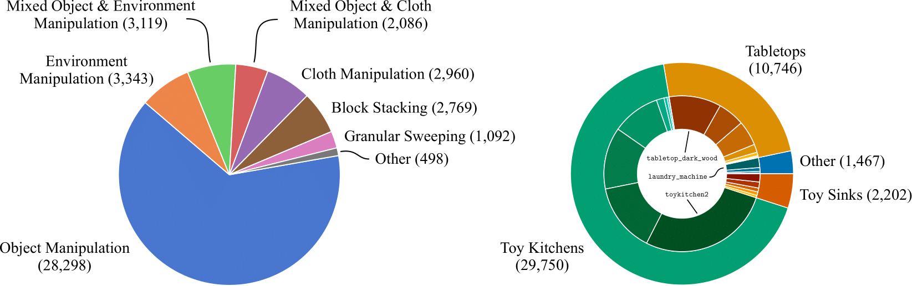

BridgeData V2 is a large and diverse dataset of robotic manipulation behaviors designed to facilitate research in scalable robot learning. BridgeData V2 contains 53,896 trajectories collected across 24 environments on a publicly available low-cost robot. The dataset is compatible with open-vocabulary, multi-task learning methods conditioned on goal images or natural language instructions.
All the data was collected on a WidowX 250 6DOF robot arm. For sensing, we use an RGBD camera that is fixed in an over-the-shoulder view, and two RGB cameras with poses that are randomized during data collection. The images are saved at a 640x480 resolution and the control frequency is 5 Hz. We collect demonstrations by teleoperating the robot with a VR controller
To support broad generalization, we collected data for a wide range of tasks in many environments with suitable variations in objects, camera pose, and workspace positioning. To support the evaluation of multi-task learning methods, we collected demonstrations for many possible tasks simultaneously in each environment. BridgeData V2 includes 13 skills that range in complexity:
We used a crowdsourcing platform to label the data with language instructions. Annotators were asked to describe the task being performed by the robot in each trajectory, with particular emphasis on the final location of any moved objects.
To boost the robustness of the object repositioning skill we augmented the expert demonstrations with data from a heavily randomized scripted pick and place policy. In total, BridgeData V2 contains 44,165 expert demonstrations and 9,731 trajectories from a scripted policy collected across 24 environments and with 100+ objects.
Below, we show a breakdown of the skills and environments represented in the demonstration data.
